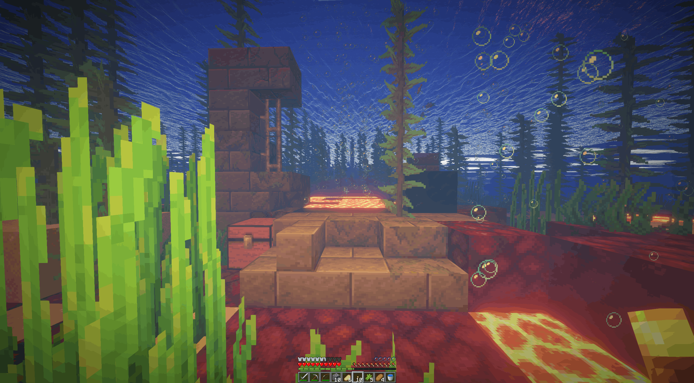
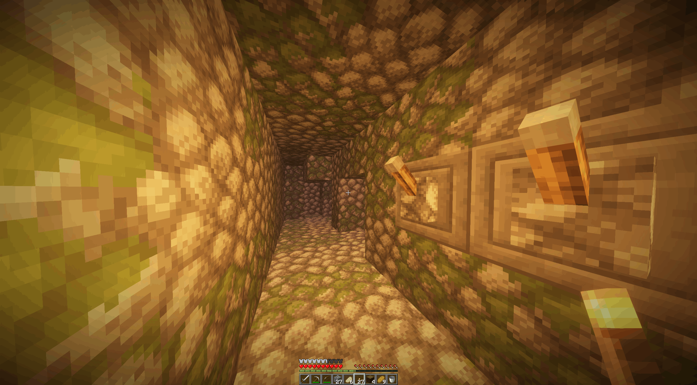

Introduction
Welcome to the Minecraft Speedrun Guidelines. This document will
help you understand the best practices for speedrunning Minecraft,
from initial setup to advanced techniques.
The first decision you may want to make is the version you decide to
play. Generally the fastest and most played version of Minecraft for
speedrunning is version 1.16.1. This is because 1.16 introduced the
piglin bartering mechanic which is the fastest and easiest way to
obtain ender pearls which are an essential item for beating the game
and in 1.16.2 the rates of piglin bartering for ender pearls were
significantly decreased and piglin brutes were added to bastions,
making the game harder and slower to beat.
Getting Started
The overworld is the initial dimension of the game Minecraft.
There are a number of important resources you will want to obtain in
the overworld before making your way to the next dimension: the
Nether.
The main resources you will be looking to obtain are tools that
allow you to break blocks quickly and combat mobs, a bucket to build
a nether portal and lots of food to regenerate health and keep
sprinting.
Other useful materials can be blocks to build around and a
shield/armour to survive taking hits from hostile mobs but when
trying to go fast, these can be lower priority.
The fastest way to obtain these resources are generally from
overworld structures and which one you decide to go for should
depend on the seed you are given : Shipwrecks Villages, Ruined
Portal, Buried Treasure, Structureless, Other Structures
Shipwrecks
Shipwrecks are generally the fastest method of gaining resources to
prepare for the nether since they consist of at most 3 chests that
can be quickly looted.
Generally you will want to go for shipwrecks when you spawn on an
island or near an ocean and useful items to craft when going for
them are a boat for travelling through the ocean fast, doors since
they allow you to breathe underwater in java edition.
Also be on the lookout for dolphins which allow you to travel faster
than boats.

There are 16 different variants of shipwrecks and they spawn with
different chests so being able to identify them quickly is a useful
skill.
In a full shipwreck, there are 3 chests: The supply chest or food
chest which is useful since it can have food like carrots, potatoes,
suspicious stew, wheat for crafting into bread and rotten flesh if
needed.
There is the treasure chest which is the most useful one since it
contains necessary iron and gold and sometimes diamonds.
There is also the map chest which contains a buried treasure map for
locating buried treasure for more useful resources.
Shipwrecks also come with some wood logs which may be useful if you
need to obtain them. After looting a shipwreck, depending on the
resources obtained you should be ready to build a Nether Portal to
head to the Nether.
Villages
Villages are an important source of resources in minecraft
speedrunning.
They can contain haybales for food and easy access to items such as
beds, wood, stone, iron and obsidian for later progression in the
game.
The village type depends on which biome you are in, and there are 5
of them with some similarities but also some important differences.
Villages can be quite large, so going through every house can be
quite slow, especially since some houses aren't useful.
Generally the main resources you will want to get from a village is
food, some beds and a bucket.
The most valuable house in every village is the weaponsmith which is
mainly called the blacksmith for historical reasons since its chest
has the most valuable loot, can contain iron pickaxes, iron ingots,
gold ingots and iron armour and it is marked by a grindstone.
Other notable houses are fishermen houses which can have buckets in
their chests, marked by buckets.
The main way of obtaining a bucket is killing the iron golem in a
village.
By hitting the golem and pillaring up 3 blocks you can easily kill
the golem without much risk.
However you should be careful as iron golems do a lot of damage and
have a large range.
Iron golems drop 3-5 iron, enough to craft a bucket.
If you only get 3 it may be awkward to obtain a flint and steel
though.
Savanna Villages
Savanna Villages spawn in the savanna biome and have haybales which
are very useful since they can be crafted into wheat and then into
bread for food.
Crafting a hoe can be useful to mine the haybales faster.
The blacksmith in this village is quite large and rare.
The most notable difference in this village is that normal house
chests can contain buckets so it can be worth it to check them.
Plains Villages
Plains Villages spawn in the plains biome and have haybales. The
blacksmith is quite large containing two lava sources.
Desert Villages
Desert Villages spawn in the desert biome and have haybales.
The blacksmith is quite large containing two lava sources. Make sure
to obtain wood logs before heading into a desert since there are no
trees in the desert.
Otherwise you will need to break dead bushes for sticks and use
crafting tables inside houses.
Taiga Villages
Taiga Villages spawn in taiga biomes and they don't have haybales.
One big advantage of these villages is their chests contain logs,
however food is awkward to come by and you can find bread in chests,
or trade emeralds in chest with a farmer villager for bread or
potentially cook potatoes from chests on campfires in the village.
Also there is some haybales underneath some campfires.
Also the blacksmiths are more difficult to identify since they are
smaller but they are more common.
Another note is that iron golems sometimes do not spawn in these
villages, so it can be more awkward to obtain some iron.
Snowy Villages
Snowy Villages spawn in snowy tundra biomes and they don't have
haybales.
One advantage of these villages is they tend to have lots of
furnaces which could be used for smelting food/iron.
Other than that, these villages tend to be not that useful.
Once you've finished looting a village, you should be ready to build
a Nether Portal to enter the nether.
Ruined Portal
Ruined Portals are a new structure added in 1.16 and can spawn in
both the overworld and the nether, although the overworld ones are
most useful.
There are 13 different ruined portal variants, with different chest
locations so learning them can be useful.
The chest can contain useful loot such as a flint and steel or fire
charge for lighting a nether portal, flint for crafting a flint and
steel, gold or iron nuggets, obsidian, gold blocks or enchanted gold
armour.
If the ruined portal contains no crying obsidian in the portal part
of the structure and you have some obsidian in your inventory or in
the chest, the portal can be completable meaning you just need to
place the obsidian down and light the portal without the need of a
bucket although this is somewhat rare There can also be enough lava
to build a nether portal using the normal bucket method to enter the
nether.

Buried Treasure
Buried Treasure spawns in beach biomes randomly and are easiest to
find using a buried treasure map which can be obtained from a
shipwreck or ocean ruins.
A useful thing to know is that buried treasure always spawns at
chunk coordinates 9 ~ 9.
This means if you press f3 and next to "Chunk: " you have the first
and third coordinates equal to 9 and you are over the X on the map,
the treasure will be below you.
This can save time since the map isn't perfectly accurate to the
block.
Buried treasure contains lots of valuable loot, including iron,
gold, diamonds, cooked cod/salmon and tnt so can be very useful if
it doesn't take too long to find.
Once you have obtained this loot, you should be ready to build a
nether portal to enter the nether.
Structureless
Playing an overworld without structures can make sense if you have a
lava pool and a cave with exposed iron ore.
This means you can play Minecraft similar to a casual start,
smelting iron ore in a furnace to craft a bucket.
A flint and steel will be very useful in this situation since the
only way to obtain food this method is to kill animals such as pigs,
cows, sheep and chickens. If you light them on fire first with a
flint and steel they will drop cooked food, saving time cooking the
food in the furnace.
You should be trying to do as much as possible while the iron is
smelting such as obtaining blocks, building the portal, gathering
food, etc.
Other Structures
There are quite a lot of miscellaneous structures which are useful for minor things but aren't common or useful enough to be a staple in a speedrunner's repertoire. Still knowing some things about them can be useful in some situations.
Abandoned Mineshafts
These spawn underground and have chests in minecarts which can
contain food and iron. They spawn most commonly and are often
exposed in mesa biomes. They have cave spiders inside which will
poison you if the difficulty is higher than easy.
Ocean Ruins
These spawn in or near oceans and can have stone axes and buried
treasure maps but are otherwise not very useful and you will often
get attacked by a drowned.
Desert Pyramids
Also called desert temples, these spawn in deserts and have some
useful resources like golden apples, iron, gold, diamonds, string
and 9 tnt. Definitely can be very useful although they tend to not
have quite enough iron or food and take too much time to loot to be
a mainstay of speedrunning in 1.16.
Igloos
Igloos spawn in snowy biomes and will contain a furnace. Half of
igloos spawn with a basement section which contains a golden apple
and a splash potion of weakness for curing a zombie villager which
gives good trades. This would be useful for the trading with
villagers for ender pearls strategy, but this strategy is slower in
1.16.1 than bartering with piglins. Also can contain a stone axe in
the chest in the basement.
Jungle Temples
Jungle Temples spawn in jungle biomes and contain 2 chests, one
hidden behind the lever puzzle and one behind some dispensers with
arrows. Can contain some iron, gold and diamonds but are quite
inconsistent. Oftentimes, mining through the lever puzzle and
accessing the chest this way is much faster than solving it.

Pillager Outposts
Pillager Outposts spawn in the same biomes a village can spawn in.
They have one chest at the top which can contain some iron and logs
as well as some food. They can also spawn with a caged iron golem,
but killing the golem while being harassed by pillagers is very
difficult.
Swamp Huts
Swamp huts, or witch huts are basically useless for speedrunning
since they have no chests. Theoretically one could obtain a useful
potion by killing the witch at the right time, but this is very
inconsistent and not very applicable
Woodland Mansions
Woodland mansions are actually quite useful but they are so rare as
to not really be worth investing time into. They also can take a lot
of time to navigate because of how large they are. There are many
different rooms and lots of loot from chests.
Here is a semiserious guide to mansions made by T_Wagz
Dungeons
Dungeons can have iron and buckets and some food in their chests so
can be useful but as with most underground structures they are
somewhat rare to find.
Building a Nether Portal
In casual Minecraft, generally players will get a diamond pickaxe,
mine 10 obsidian and build a nether portal from that.
However since getting diamonds is inconsistent and each obsidian
takes around 10 seconds to mine, in a speedrun this is quite slow
and a much faster method that only requires a water bucket and some
lava.
The main idea is to place some water so that lava can be placed to
form obisidian in a portal cast.
There are two main different areas to build a nether portal in: a
lava pool either above or below ground or a magma ravine below which
often has lava.
Lava Pool
If you're on land, either looking around for a lava pool or digging
down for one, this will be the method you will want to use to build
a portal and get to the nether.
Here is a simple guide to the most basic nether portal setup,
created by former world record holder Cscuile.
Magma Ravine
If you've looted a shipwreck/buried treasure and are in an ocean,
you may want to enter the nether via an ocean ravine.
At the bottom of some ocean ravines are magma blocks which have lava
beneath them and if you're crafty you can build a nether portal with
it, although this can be awkward with swimming mechanics.
Here is quite a lengthy guide to a few different methods of building
a portal in an ocean ravine by T_Wag Once you've built your nether
portal you're headed into the Nether!